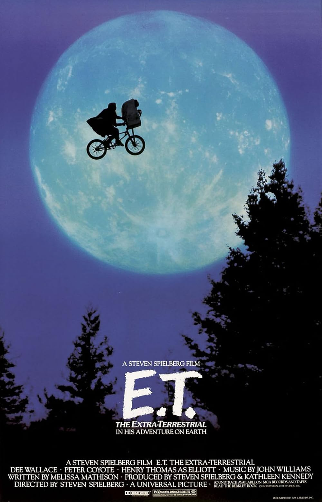

| Watched | ||
|---|---|---|
| Nominations | |||
|---|---|---|---|
| Category | Nominees | Result | Voted |
| Best Picture | Kathleen Kennedy and Steven Spielberg | Nominated | |
| Directing | Steven Spielberg | Nominated | |
| Writing (Screenplay Written Directly for the Screen) | Melissa Mathison | Nominated | |
| Cinematography | Allen Daviau | Nominated | |
| Film Editing | Carol Littleton | Nominated | |
| Visual Effects | Carlo Rambaldi, Dennis Muren, and Kenneth F. Smith | Won | |
| Sound | Don Digirolamo, Gene Cantamessa, Robert Glass, and Robert Knudson | Won | |
| Sound Effects Editing | Ben Burtt and Charles L. Campbell | Won | |
| Music (Original Score) | John Williams | Won | |